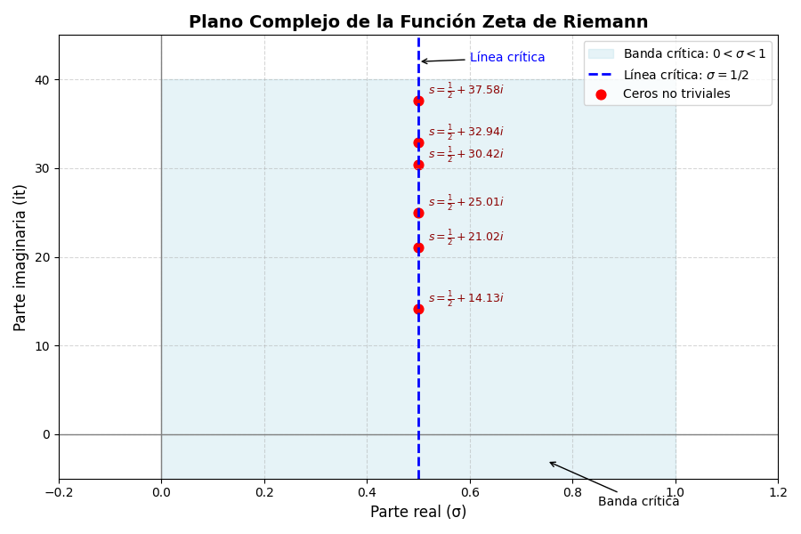
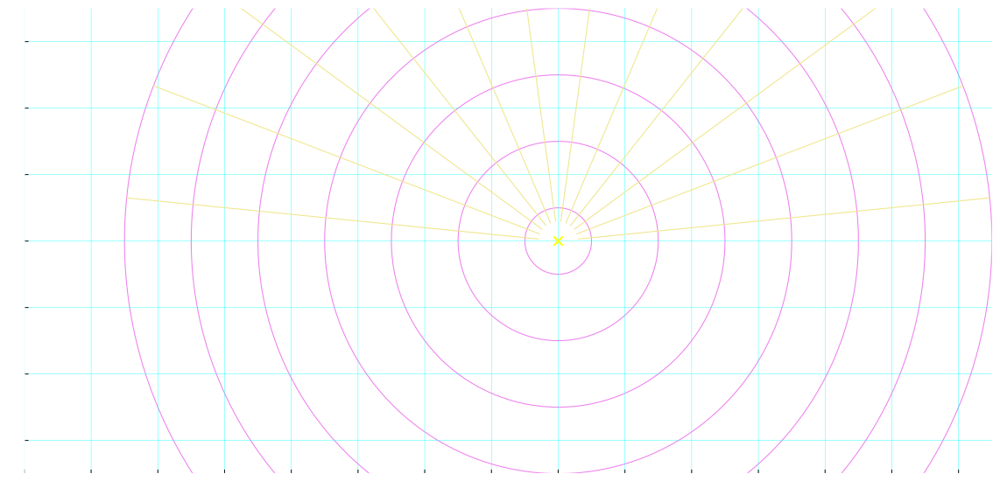
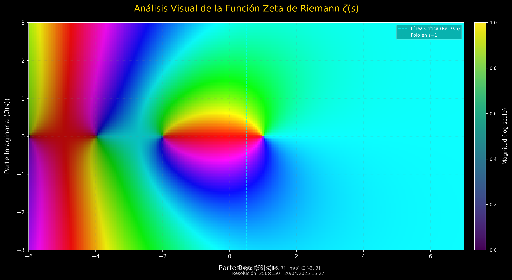
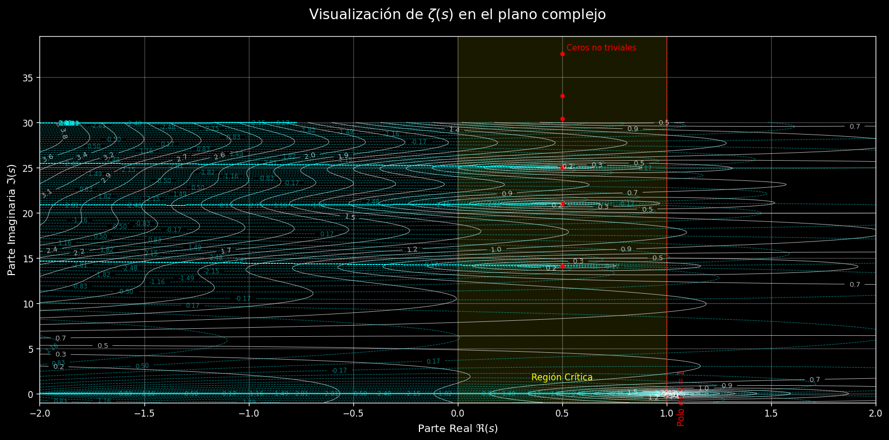

Explorando uno de los mayores misterios de las matemáticas
Definida inicialmente por Euler para números reales s > 1 como una suma infinita:
Euler descubrió una conexión profunda con los números primos a través del Producto de Euler.
La función Zeta también puede expresarse como un producto infinito sobre todos los números primos p:
Esta fórmula revela la conexión entre la función Zeta y la distribución de los números primos.
Bernhard Riemann extendió la definición de $\zeta(s)$ a los números complejos $s = \sigma + it$ mediante continuación analítica.
Esta extensión permite estudiar la función en casi todo el plano complejo (excepto en $s=1$, donde tiene un polo), lo cual es fundamental para encontrar sus ceros.
La función Zeta es cero para todos los enteros pares negativos:
Se llaman "triviales" porque su existencia se deriva fácilmente de la ecuación funcional de la función Zeta.
Los ceros más interesantes se encuentran en la banda crítica del plano complejo, donde $0 < \sigma < 1$.
La "línea crítica" es la vertical donde la parte real es $1/2$. Todos los ceros no triviales conocidos están sobre esta línea.
La hipótesis postula que:
"Todos los ceros no triviales de la función Zeta de Riemann tienen una parte real igual a $1/2$."
Es decir, todos se encuentran en la línea crítica.
La ubicación de los ceros no triviales está íntimamente ligada a la distribución de los números primos.
Si la hipótesis es cierta, implicaría que los números primos están distribuidos de la manera más "regular" posible.
Muchos resultados en teoría de números dependen de esta hipótesis.
La Hipótesis de Riemann sigue sin ser probada.
Se ha verificado computacionalmente para billones de ceros, pero una prueba general sigue siendo esquiva.
Es uno de los siete Problemas del Premio del Milenio con un premio de un millón de dólares.
Un desafío que sigue inspirando a matemáticos en todo el mundo.
Estructura circular y ortogonal de $\zeta(s)$ centrada en $s=1$.
Combinación del plano complejo y curvas estructurales de $\zeta(s)$.
Visualización cromática del comportamiento de $\zeta(s)$ en el plano complejo.
Visualización contornos y lineas critica $\zeta(s)$ en el plano complejo.
Visualización $\zeta(s)$ en el plano complejo.
Simulación animada del campo complejo de $\zeta(s)$.